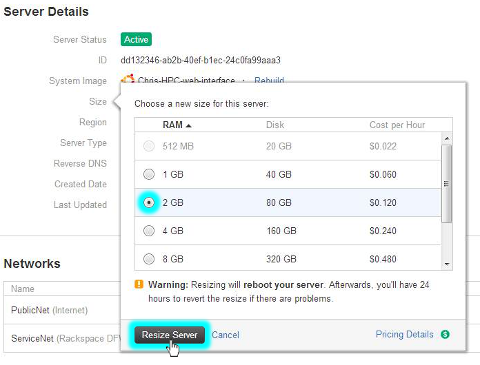

High Performance Computing
High performance computing (HPC) enables scientists and researchers to solve complex problems that require many computing capabilities. HPC typically utilizes a message passing interface (MPI) to communicate between different nodes.
HPC in Cloud
Currently, most projects requiring HPC are still running on legacy Unix systems. Migrating these projects to a Cloud-based installation is very simple and does not require much additional setup. In this tutorial, we will build an HPC cluster with Open MPI on the Rackspace Cloud. Next, we will run an Open MPI application on top of our cluster. By the end of this tutorial, you will know how to leverage the Cloud to rapidly build and scale an HPC cluster for real-time data processing while removing the dependency on physical infrastructure.
Open MPI
To achieve high performance clustering in the Cloud, we will use Open MPI, which is a Message Passing Interface project. It provides parallel processing, thread safety and concurrency, dynamic process spawning, and network and fault tolerance. This library is used by the world’s fastest super computers and is instrumental in powering many petaflops. To find out more about Open MPI library, visit their site: open-mpi.org.
Objective
In this tutorial, we will show you how to build an HPC cluster using the following:
- Four Rackspace Cloud Servers
- Open MPI
Prerequisites
The following prerequisites are expected for successful completion of this tutorial:
- Rackspace Cloud account: https://cart.rackspace.com/cloud/
- SSH client (Windows users: download PuTTY)
- A basic knowledge of Linux and Open MPI
Installation
In this tutorial, we will be setting up a four-node cluster, running applications on it, and gauging the performance.
Figure 1 - HPC on the Cloud High Level Architecture
Overview
In this tutorial, we will show you how to:
- Create a Cloud Server
- Install Open MPI
- Enable Clustering
- Configure HPC
- Create and deploy a Cloud Server image
- Install and run a sample Open MPI enabled application
1. Create a Cloud Server
Login to https://mycloud.rackspace.com and create a Cloud Server from the web interface with the following attributes. See Figure 2 for details.
- Server name: yourname-HPC-node-01
- Region: Dallas (DFW)
- Image (Rackspace): Ubuntu 12.04 LTS (Precise Pangolin)
- Size: your choice
- Click: Create Server
Figure 2 - Create the Rackspace Cloud Server
The Cloud Server will begin building. During this time, a popup will appear with the Cloud Server password. Record this information as you will need it later. Dismiss the popup window and wait for the server build to complete. Write down IP address for the server as it becomes available.
2. Install Open MPI
Once the server finishes building and is in Available status, SSH into it and log in using the IP address and password you recorded earlier.
ssh root@<your-server-ip-addr>After logging in, execute the following commands:
apt-get updateapt-get install build-essential –y
apt-get install openmpi-bin openmpi-checkpoint openmpi-common openmpi-doc libopenmpi-dev -y
3. Enable Clustering
As mentioned earlier, Open MPI facilitates communication between nodes via SSH, therefore, we will need to enable key-based logins for SSH.
To do this, run the following commands:
echo <StrictHostKeyChecking no> >> /etc/ssh/ssh_config
ssh-keygen -t rsa -b 2048 -f ~/.ssh/id_rsa -C <Open MPI>
The output of these commands should look similar to the following:
Generating public/private rsa key pair.Enter passphrase (empty for no passphrase):
Enter same passphrase again:
Your identification has been saved in /root/.ssh/id_rsa.
Your public key has been saved in /root/.ssh/id_rsa.pub.
The key fingerprint is:
35:85:97:3c:98:89:8d:bc:58:96:97:41:ad:0b:a6:c8 Enter an optional comment about your key
The key's randomart image is:
+--[ RSA 2048]----+
| . *oX.. |
| B O.* |
| + ooo . |
| . +... |
| . . oS. . |
| E . . |
| |
| |
| |
+-----------------+
Note: You will be prompted for a passphrase during this process. Leave it blank.
Copy the key to authorized key folder and change permissions to allow SSH logins:
chmod 600 ~/.ssh/authorized_keys
4. Configure HPC
Now we are going to configure the master HPC node by creating a host file. To do this, ensure you are logged in to the first node over SSH and create the following file where <Your Server IP> is the IP address you used to SSH into the machine:
cd ~/echo <Your Server IP> >> mpi_hosts
To verify the file:
cat mpi_hostsYou should see:
<Your Server IP>To verify we have configured everything correctly so far, we will use the hello_c.c from the examples included with Open MPI.
To do this, follow these steps:
cd /root/samples
wget http://svn.open-mpi.org/svn/ompi/tags/v1.6-series/v1.6.4/examples/hello_c.c
mpicc hello_c.c -o hello
mpirun ./hello
This should output the following:
Hello, world, I am 0 of 1Now that it works, get the second example, which we will use it for testing connectivity:
wget http://svn.open-mpi.org/svn/ompi/tags/v1.6-series/v1.6.4/examples/connectivity_c.cmpicc connectivity_c.c -o connectivity
mpirun ./connectivity
You should see the following output:
Connectivity test on 1 processes PASSED.Now that we have confirmed that the first node is online and operational, we will finish building the cluster.
5. Create and Deploy a Cloud Server Image
With our first node created, we are ready to set up a cluster. We will need to make copies of the node we just created. Login to https://mycloud.rackspace.com again and follow these steps to create an image:
- Navigate to the serverslist
- Select the server you created for the first node
- Click on the Actions drop down menu
- Click Create Image. See figure 3 for details.
- When prompted, provide a meaningful name as shown in Figure 4.
- Finally, click Create Image and wait a few minutes for the image to be created.
Figure 3 - Creating a Server Image
Figure 4 - Naming the Image
When completed, deploy a new Cloud Server using our prior procedure with the following exception; when prompted for image, click the Saved tab. Again, you will need to provide a meaningful name. Additionally, record the password and IP address.
Let's say that the IP of your new server is 10.20.30.40, and the IP/hostname of your first server is <Your Server IP>. To add the new node to the cluster, do the following:
cd ~/
cat >> mpi_hosts <<EOF 10.20.30.40 EOF
Now, your host file should resemble this:
<Your Server IP>10.20.30.40
To test the connectivity between the nodes, execute the following command:
mpirun -v -np 2 --hostfile ~/mpi_hosts /root/samples/connectivity6. Install and Run a Sample Open MPI enabled Application
Now that we have an Open MPI cluster, let's see how it performs. We will use a simple ray tracing application that can run on a single node or on an Open MPI cluster and compare the performance.
First, we will need to install this application on all nodes of the cluster. To do this, SSH into the master node and do the following:
cd ~/tachyon/compile/linux-mpi
The Tachyon Parallel / Multiprocessor Ray Tracing System comes with multiple sample data files in the scenes folder, we will be using them to run our tests. First, lets run it on one node:
cd ~/tachyon/compile/linux-mpi./tachyon ../../scenes/teapot.dat
You should see the following output:
Tachyon Parallel/Multiprocessor Ray Tracer Version 0.99Copyright 1994-2011, John E. Stone <john.stone@gmail.com>
------------------------------------------------------------
Scene Parsing Time: 0.0221 seconds
Scene contains 2330 objects.
Preprocessing Time: 0.0052 seconds
Rendering Progress: 100% complete
Ray Tracing Time: 2.1399 seconds
Image I/O Time: 0.0174 seconds
Note the ray tracing time as we will compare it to our parallel run:
mpirun -np 4 --hostfile ~/mpi_hosts ./tachyon ../../scenes/teapot.dat -format BMPYou should see the following output:
Tachyon Parallel/Multiprocessor Ray Tracer Version 0.99Copyright 1994-2011, John E. Stone <john.stone@gmail.com>
------------------------------------------------------------
Scene Parsing Time: 0.0230 seconds
Scene contains 2330 objects.
Preprocessing Time: 0.0052 seconds
Rendering Progress: 100% complete
Ray Tracing Time: 0.6048 seconds
Image I/O Time: 0.0182 seconds
Our cluster consisted of four nodes and one CPU each, therefore, the performance improvement was almost four times greater. Even if you don't have multiple nodes and run your application on one node, but tell OpenMPI to use both CPUs, you will still have significant improvements.
To run this, you will need to resize one of your servers to at least 2GB of RAM. This is because the 512MB size only has access to one CPU. Sizes 2GB and up have access to at least 2 CPUs. For more information on sizes, see http://www.rackspace.com/cloud/servers/techdetails/.
To resize your server:
- Navigate to the servers list
- Select the server you created for the first node
- Click on the Actions drop down menu
- Select Resize Server
A menu will appear. Select the new server size and click Resize Server. You will have to wait for the server to return to Active status before you can use it.
Figure 5 - Resize Server
Figure 6 - Select a New Size
Now we can run this code on multiple CPUs of a single server.
mpirun -np 2 ./tachyon ../../scenes/teapot.dat -format BMPYou should see the following output:
Tachyon Parallel/Multiprocessor Ray Tracer Version 0.99Copyright 1994-2011, John E. Stone <john.stone@gmail.com>
------------------------------------------------------------
Scene Parsing Time: 0.0222 seconds
Scene contains 2330 objects.
Preprocessing Time: 0.0050 seconds
Rendering Progress: 100% complete
Ray Tracing Time: 1.0888 seconds
Image I/O Time: 0.0181 seconds
Notice that even when running on a single node but utilizing Open MPI, the performance has almost doubled. To read more about this ray tracing application, visit http://jedi.ks.uiuc.edu/~johns/raytracer/.
Summary
In this tutorial, you learned how to create and image Cloud Servers. You also learned how to setup an HPC cluster using Open MPI. After setting up and configuring the cluster, you installed a small ray tracing application to demonstrate the benefits of using multiple nodes instead of one node.